▲ 미국에서 판매된 코롤라 크로스 하이브리드 SE(파일명 기준 2023년형) ⓒ HJUdall (Wikimedia Commons, CC0)
"토요타가 아무것도 더하지 않았다. 그냥 가격 인상이다." 카버즈(조엘 스톡스데일 기자, 10월 2일)는 2027년형 코롤라 크로스 가격표를 이렇게 평했다. 토요타 USA 뉴스룸에 따르면 2027년형 코롤라 크로스는 가솔린 L 25,535달러, 하이브리드 SE 31,415달러부터 시작한다(딜러 처리·배송비 제외). 이번에 토요타가 같은 날(10월 2일) 갱신한 공식 '2026/2027 풀라인 가격표' PDF와 2026년 2월 26일자 가격표를 직접 내려받아 대조했다. 그 결과 인상폭은 가솔린 전 등급 +500달러, 하이브리드 SE·XSE +700달러로 확정됐고, 카버즈가 전한 XSE 34,150달러(+720달러)는 공식 가격표(34,130달러, +700달러)와 20달러 어긋났다. 이 글은 공식 가격표를 기준으로 인상폭과 하이브리드 회수 기간을 다시 계산한다.
미국 판매 모델 중심의 기사다. 코롤라 크로스는 최근 리콜 이슈로도 이름이 오른 차종으로, 관련 내용은 토요타 2026 리콜 100만 대 정리 기사에서 다뤘다.
1. 토요타가 공개한 2027년형 가격표
토요타 USA 뉴스룸의 2027년형 코롤라 크로스 보도자료(10월 2일 공개)는 가솔린 L 등급 25,535달러, 하이브리드 SE 31,415달러부터라고 밝히고, 가격에는 딜러 처리·배송비가 빠져 있다고 적었다. 등급별 가격과 목적지 요금(1,595달러)은 토요타가 2026년 10월 2일 갱신한 '2026/2027 Toyota Full-Line Pricing' PDF에서 직접 확인했다. 카버즈가 전한 가격과는 하이브리드 XSE만 20달러 다르고(카버즈 34,150달러 vs 가격표 34,130달러), 나머지는 일치한다.
| 등급 | 파워트레인 | MSRP | 목적지 1,595달러 포함 | 비고 |
|---|---|---|---|---|
| L | 2.0L 가솔린 FWD | $25,535 | $27,130 | AWD +$1,300(가격표: $26,835) |
| LE | 2.0L 가솔린 FWD | $27,865 | $29,460 | AWD +$1,300(가격표: $29,165) |
| XLE | 2.0L 가솔린 FWD | $30,460 | $32,055 | AWD +$1,450(가격표: $31,910) |
| SE | 2.0L 하이브리드 e-AWD | $31,415 | $33,010 | S 등급 폐지로 신규 입문 등급 |
| XSE | 2.0L 하이브리드 e-AWD | $34,130 | $35,725 | 하이브리드 최상위 |
'목적지 포함' 열은 카프리즘이 MSRP에 토요타 가격표가 명시한 목적지 요금(DPH) 1,595달러를 단순 합산한 값이다. 코롤라 크로스와 코롤라 크로스 하이브리드는 같은 'Entry SUV' 구분으로 같은 금액이다. 딜러 부가 비용·세금은 포함하지 않는다.
📍 숫자가 하나로 모이지 않는 이유
토요타 뉴스룸 보도자료는 '시작가'만 제시하고 목적지 요금은 적지 않았지만, 공식 가격표 PDF에는 코롤라 크로스(하이브리드 포함) 1,595달러로 명시돼 있다. 2026년 2월 26일자 가격표에는 같은 구분이 1,450달러였다. 2026년형 출시 보도자료(2025년 9월 24일)의 1,495달러는 이 두 가격표 어느 쪽과도 맞지 않는데, 그 이유(출시 시점 값 또는 연중 변경)는 확인하지 못했다. 카버즈가 'XSE 34,150달러·+720달러'로 쓴 것은 가격표와 다르므로 이 글은 가격표(34,130달러·+700달러)를 따른다.
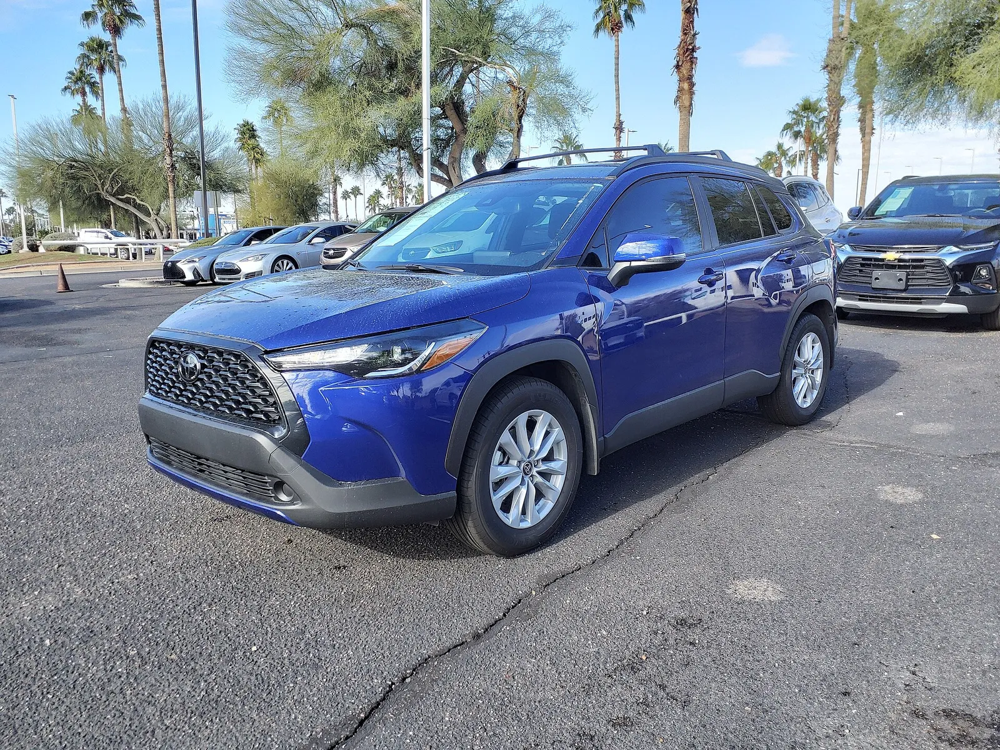
▲ 미국에서 판매된 코롤라 크로스 가솔린 LE(촬영 파일명 기준 2022년형). 2027년형과 외관 세부는 다를 수 있다 ⓒ HJUdall (Wikimedia Commons, CC0)
2. 얼마나 올랐나 — 기준에 따라 달라지는 인상폭
카버즈는 가솔린 전 등급이 500달러, 하이브리드 SE가 700달러, XSE가 720달러 올랐다고 썼다. 토요타 공식 가격표(2026년 2월 26일자 → 2026년 10월 2일자)를 직접 대조하면 가솔린 500달러와 SE 700달러는 맞고 XSE는 700달러다. 하이브리드는 2026년형 S(29,395달러)가 사라지면서 입문 가격이 2,020달러 높아졌다. 아래 표는 두 가격표의 MSRP를 그대로 옮기고 퍼센트와 목적지 요금 포함 인상폭을 더한 카프리즘의 계산이다.
| 등급 | 2026 MSRP(가격표) | 2027 MSRP | MSRP 인상 | 인상률 | 목적지 포함 인상 |
|---|---|---|---|---|---|
| L | $25,035 | $25,535 | +$500 | +2.0% | +$645 |
| LE | $27,365 | $27,865 | +$500 | +1.8% | +$645 |
| XLE | $29,960 | $30,460 | +$500 | +1.7% | +$645 |
| 하이브리드 SE | $30,715 | $31,415 | +$700 | +2.3% | +$845 |
| 하이브리드 XSE | $33,430 | $34,130 | +$700 | +2.1% | +$845 |
| 하이브리드 입문(S→SE) | $29,395 | $31,415 | +$2,020 | +6.9% | +$2,165 |
계산 방식: 인상액 = 2027 MSRP − 2026 MSRP(둘 다 토요타 가격표 값), 인상률 = 인상액 ÷ 2026 MSRP. 목적지 포함 인상은 MSRP 인상액에 목적지 요금 인상 145달러(1,595 − 1,450, 두 가격표 값)를 더했다. 이전 판에서는 카버즈 기재 인상폭으로 2026년 가격을 역산했는데, 이번에 가격표 원본과 대조해 L·LE·XLE·SE·S는 역산값이 정확했고 XSE만 수정했다. AWD 추가 요금은 2026·2027년 모두 L·LE +1,300달러, XLE +1,450달러로 변하지 않았다.
| 출처 | 2026 가솔린 L(FWD) | 2026 하이브리드 S | 2027 대비 |
|---|---|---|---|
| 토요타 출시 보도자료(2025.9.24) | $24,635(시작가로 표기) | $28,995(시작가로 표기) | L +$900, S→SE +$2,420 |
| 토요타 공식 가격표(2026.2.26) — 이 글의 기준 | $25,035 | $29,395 | L +$500, S→SE +$2,020 |
| 카버즈(2026.10.2) | $25,035(공식 가격표와 일치) | $29,395(일치) | L +$500, S→SE +$2,020(XSE만 +720으로 20달러 어긋남) |
| TFL·AutoFinder 등 집계(2026년 중) | $25,335 | $29,795 | L +$200, S→SE +$1,620 |
TFLcar의 2027 셀토스 가격 비교표(2026년 6월)가 적은 코롤라 크로스 시작가 26,830달러(목적지 포함)에서 목적지 1,595달러를 빼면 25,235달러, 1,450달러를 빼면 25,380달러다. 모두 공식 2월 가격표의 25,035달러와 맞지 않는다. 2월 이후 6월 사이에 가솔린 L이 200달러 오르고(25,235달러) 목적지 요금이 1,595달러가 됐다고 보면 계산이 맞아떨어지지만, 이는 TFL 표에서 거꾸로 맞춰 본 추정일 뿐 토요타 공식 자료로는 확인하지 못했다. 그래서 이 글은 공식 가격표가 확인되는 2월 값을 기준으로 +500달러를 쓰고, 중간 인상이 실제 있었다면 '6월 대비 인상'은 +300달러(25,535 − 25,235)가 된다는 점만 병기한다.
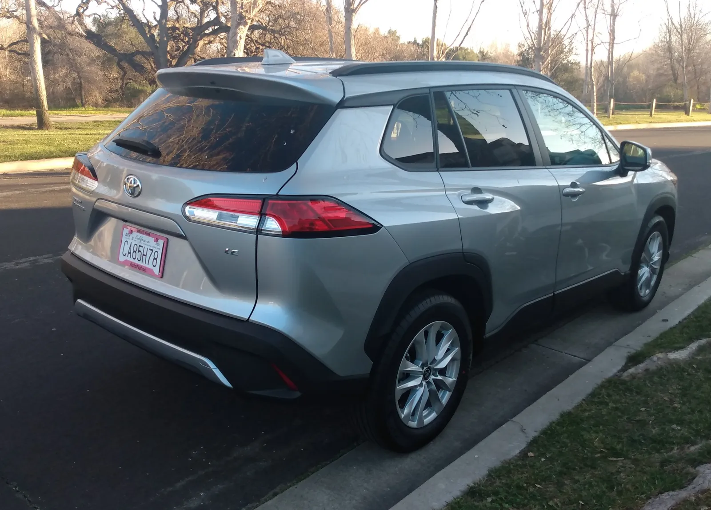
▲ 미국에서 촬영된 코롤라 크로스 가솔린 LE의 후면(파일명 기준 2022년형). 2027년형과 세부 사양이 같다고 확정하지 않는다 ⓒ DestinationFearFan (Wikimedia Commons, CC BY-SA 4.0)
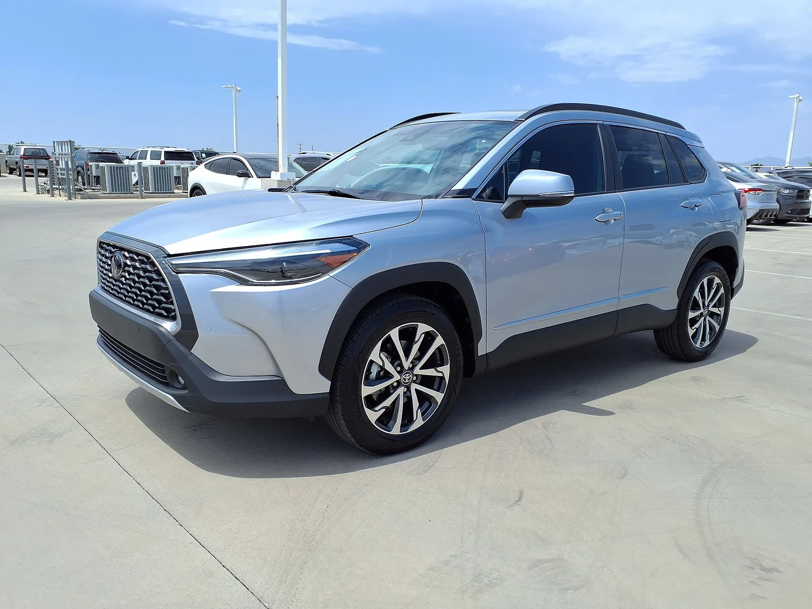
▲ 코롤라 크로스 가솔린 XLE(촬영 파일명 기준 2022년형). 2027년형 XLE는 10.5인치 화면(선택)이 안내된다 ⓒ HJUdall (Wikimedia Commons, CC0)
3. 하이브리드 S 폐지 — '가장 싼 하이브리드 SUV'의 정체
토요타 보도자료는 "2027년형 코롤라 크로스 하이브리드 라인업은 3개에서 2개 등급으로 단순화되며, S 등급을 없애고 SE 또는 XSE 중에서 고르게 된다"고 밝혔다. 카버즈 제목('토요타의 가장 싼 하이브리드 SUV가 훨씬 비싸졌다')이 말하는 핵심이 여기 있다. 하이브리드 시스템(2.0L 4기통 + 모터, 시스템 합산 196마력, 복합 42mpg)은 같지만 문턱이 높아진 것이다.
| 비교 | 금액 | 계산 |
|---|---|---|
| 2026 하이브리드 S → 2027 SE | +$2,020 | 31,415 − 29,395 |
| 2027 가솔린 L AWD | $26,835 | 25,535 + 1,300 |
| 2027 가솔린 LE AWD | $29,165 | 27,865 + 1,300 |
| 2027 가솔린 XLE AWD | $31,910 | 30,460 + 1,450 |
| 하이브리드 SE − 가솔린 XLE AWD | −$495 | 31,415 − 31,910(SE가 더 쌈) |
| 하이브리드 SE − 가솔린 LE AWD | +$2,250 | 31,415 − 29,165 |
하이브리드는 전 등급 전자식 AWD가 기본이므로 비교 대상은 가솔린 AWD다(AWD 가격은 토요타 가격표 값). SE(31,415달러)는 가솔린 XLE AWD(31,910달러)보다 495달러 싸다. 다만 등급 구성(편의 사양)이 같다는 뜻은 아니므로 장비 단순 비교는 하지 않았다. 토요타는 연식 변경에 따른 기능 추가가 없고 사양은 이월된다고만 밝혔다.
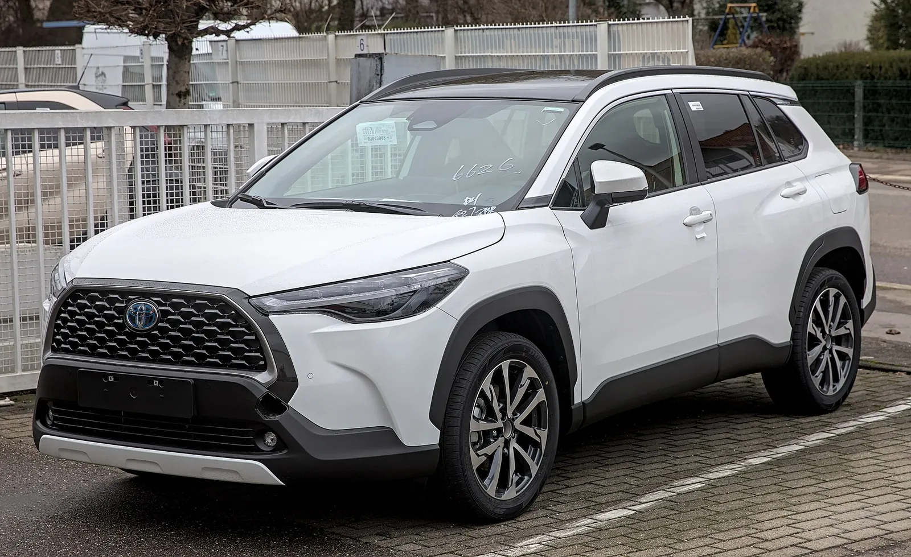
▲ 유럽 사양으로 보이는 코롤라 크로스 하이브리드(확정하지 않음). 미국형 SE와 세부가 다를 수 있다 ⓒ Alexander Migl (Wikimedia Commons, CC BY-SA 4.0)
4. 연식 변경 내용 — 바뀐 것은 가격뿐인가
토요타 뉴스룸 기준 2027년형의 변경점은 하이브리드 S 등급 폐지가 전부다. 카버즈도 "아무것도 더하지 않았다"고 썼다. 반면 오토가이드는 10.5인치 화면과 12.3인치 디지털 계기판이 새로 들어갔다고 전했다. 토요타 제품자료(Product Information PDF)에는 12.3인치 계기판이 하이브리드 XSE·가솔린 XLE 기본, 나머지 등급은 7인치로 적혀 있고 10.5인치 멀티미디어는 하이브리드 SE 선택·XSE 기본으로 나오지만, 이 사양이 2027년에 새로 추가됐다는 표시는 없다. 토요타 보도자료의 "기능과 사양은 이월"이라는 설명과도 어긋나 신규 추가라는 주장은 확인하지 못했다. 오토가이드 기사 제목('하이브리드 등급을 정리하고 가격이 내려간다')도 카버즈·토요타 수치와 정반대여서 신뢰하지 않았다.
| 항목 | 가솔린 | 하이브리드 |
|---|---|---|
| 엔진 | 2.0L 4기통 169마력 | 2.0L 하이브리드 시스템 196마력 |
| 복합 연비 | FWD 31mpg·AWD 30mpg | SE·XSE 모두 42mpg(도심 46·고속 39) |
| 구동 | FWD / AWD | 전자식 AWD 기본 |
| 등급 | L·LE·XLE | SE·XSE |
| 화물 공간 | 뒷좌석 뒤 FWD 24.0·AWD 21.5입방피트, 시트를 접으면 최대 46.9입방피트(토요타 뉴스룸 가솔린 페이지) | 뒷좌석 뒤 21.5입방피트(시트 폴드 값은 제품자료에 없음) |
| 공통 사양 | 토요타 세이프티 센스 3.0, 무선 애플 카플레이·안드로이드 오토, LED 조명 | 동일 |
| 화면 | 8인치 기본(10.5인치는 일부 등급 선택·기본, 등급별 구분은 제품자료 표가 모호해 확정하지 않음) | 8인치(SE는 10.5인치 선택, XSE는 10.5인치 기본) |
| 생산 | 미국 앨라배마 헌츠빌 | 동일 |
연비 수치는 토요타가 표기한 제조사 추정치(가솔린 FWD 30/32/31, AWD 29/31/30, 하이브리드 46/39/42mpg)이며, 판매 시기는 2026년 가을로 안내됐다. 정확한 딜러 출시일은 확인하지 못했다.
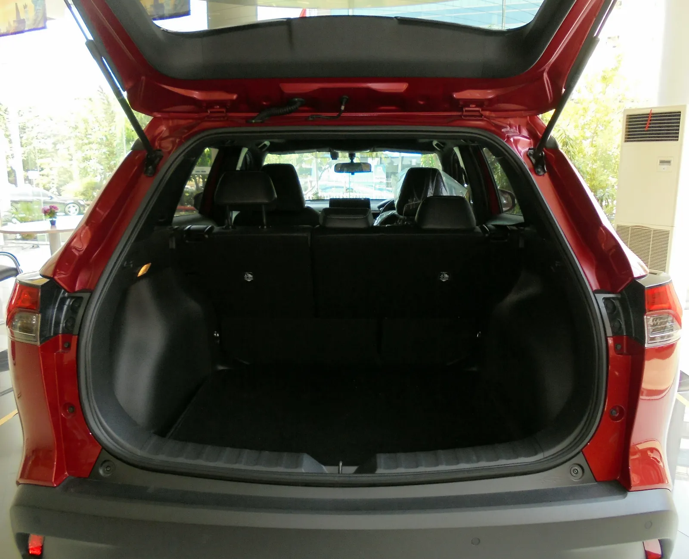
▲ 일본에서 촬영된 2020년형 코롤라 크로스의 화물칸(파일명 기준). 미국형과 바닥 높이·적재 구성이 같다고 확정하지 않는다 ⓒ オーバードライブ83 (Wikimedia Commons, CC BY-SA 4.0)
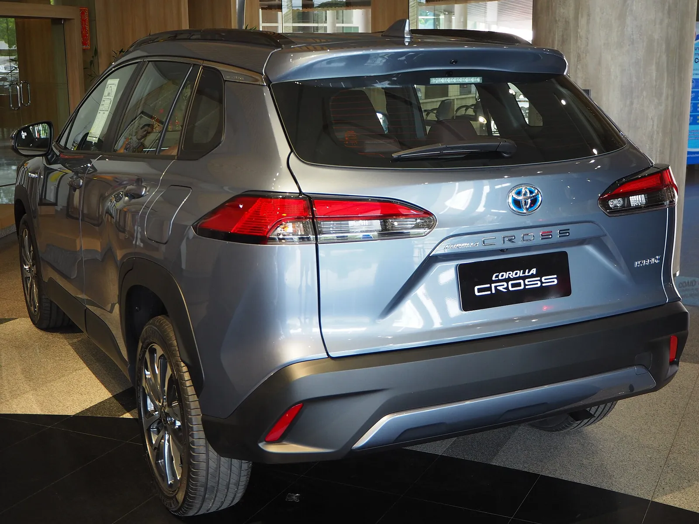
▲ 코롤라 크로스 하이브리드의 후면(태국 전시 차량, 2020년형 사진). 미국형과는 세부 사양이 다르다 ⓒ Chanokchon (Wikimedia Commons, CC BY-SA 4.0)
5. 경쟁 소형 SUV와 가격표 비교
같은 체급 경쟁 차종과 비교하면 어느 위치일까. 이번에는 제조사 공식 자료로 다시 확인했다. 기아 미디어의 2027 셀토스 가격 발표(2026년 6월 3일)는 LX FWD 24,990달러·목적지 1,495달러, 최상위 X-Line SX 32,790달러다. 혼다 뉴스룸은 2027 HR-V 가격(2026년 9월 9일)을 LX FWD 26,600달러, EX-L AWD 31,950달러, 목적지 1,550달러로 공개했다(2026년형은 LX 26,200달러·EX-L AWD 31,550달러·목적지 1,450달러여서 MSRP 각 +400달러, 목적지 +100달러). 코나는 이번에도 제조사 가격표 원문을 열지 못해 집계 기준이다.
| 모델 | 연식 | 입문 MSRP | 입문+목적지 | 최상위 MSRP | 출처 성격 |
|---|---|---|---|---|---|
| 토요타 코롤라 크로스 | 2027 | $25,535(L) | $27,130 | $34,130(하이브리드 XSE) / 가솔린 FWD 최상위 $30,460 | 토요타 공식 가격표 |
| 기아 셀토스 | 2027 | $24,990(LX) | $26,485 | $32,790(X-Line SX AWD) | 기아 미디어 공식 발표(목적지 1,495달러) |
| 현대 코나 | 2027 | $25,500(SE) | $27,100 | 약 $34,035~34,150(Limited AWD, 집계마다 달라 공식 확정 못 함) | 집계 사이트, 제조사 자료 미확인 |
| 혼다 HR-V | 2027 | $26,600(LX) | $28,150(목적지 1,550달러) | $31,950(EX-L AWD) | 혼다 뉴스룸 공식 발표(2026.9.9) |
계산: 코롤라 크로스 L은 셀토스 LX보다 MSRP가 545달러(25,535 − 24,990), 목적지 포함 645달러(27,130 − 26,485) 높다. 반대로 2027 HR-V LX(28,150달러)보다는 목적지 포함 1,020달러 낮다. 코나는 집계 기준 목적지 포함 27,100달러로 코롤라 크로스 L(27,130달러)과 30달러 차이지만, 코나 수치는 공식 확인을 못 했다. 셀토스 하이브리드는 미국 가격이 '2026년 후반 발표'로만 안내돼 있어 비교하지 못했다.
| 모델 | 입문+목적지 | 셀토스 LX 대비 |
|---|---|---|
| 기아 셀토스 LX | $26,485 | 기준 |
| 현대 코나 SE | $27,100 | +$615 |
| 토요타 코롤라 크로스 L | $27,130 | +$645 |
| 혼다 HR-V LX(2027, 공식) | $28,150 | +$1,665 |
AWD 기준 공식 가격표 대조(목적지 포함)
미국 소형 SUV는 눈 지역에서 AWD를 많이 고르고, 하이브리드 SE·XSE는 AWD가 기본이다. 그래서 AWD 가격으로 한 번 더 맞춰 봤다. 코나는 공식 확인이 안 돼 제외했다. 합계 = MSRP + 해당 사의 목적지 요금(토요타 1,595·기아 1,495·혼다 1,550달러).
| 구분 | 모델·등급 | MSRP | 목적지 포함 |
|---|---|---|---|
| 입문 AWD | 코롤라 크로스 L AWD(2027) | $26,835 | $28,430 |
| 셀토스 LX AWD(2027) | $26,690 | $28,185 | |
| HR-V LX AWD(2027) | $28,100 | $29,650 | |
| 가솔린 상위 AWD | 코롤라 크로스 XLE AWD(2027) | $31,910 | $33,505 |
| 셀토스 EX AWD(2027) | $30,090 | $31,585 | |
| HR-V EX-L AWD(2027) | $31,950 | $33,500 | |
| 셀토스 최상위 | X-Line SX(1.6 터보, AWD 표준) | $32,790 | $34,285 |
| 코롤라 크로스 하이브리드 | SE e-AWD | $31,415 | $33,010 |
| XSE e-AWD | $34,130 | $35,725 |
계산 결과: 입문 AWD는 코롤라 크로스가 셀토스보다 245달러(28,430 − 28,185) 비싸고 HR-V보다 1,220달러(29,650 − 28,430) 싸다. 가솔린 상위 AWD끼리는 코롤라 크로스 XLE AWD(33,505달러)와 HR-V EX-L AWD(33,500달러)가 5달러 차이로 사실상 같다. 하이브리드 SE(33,010달러)는 가솔린 XLE AWD보다 495달러(MSRP 기준) 싸고, 셀토스 X-Line SX(34,285달러)와 비교하면 1,275달러 싸지만 SX는 190마력 터보 가솔린이어서 파워트레인 성격이 다르다. 등급별 편의 사양 차이는 반영하지 않았다.
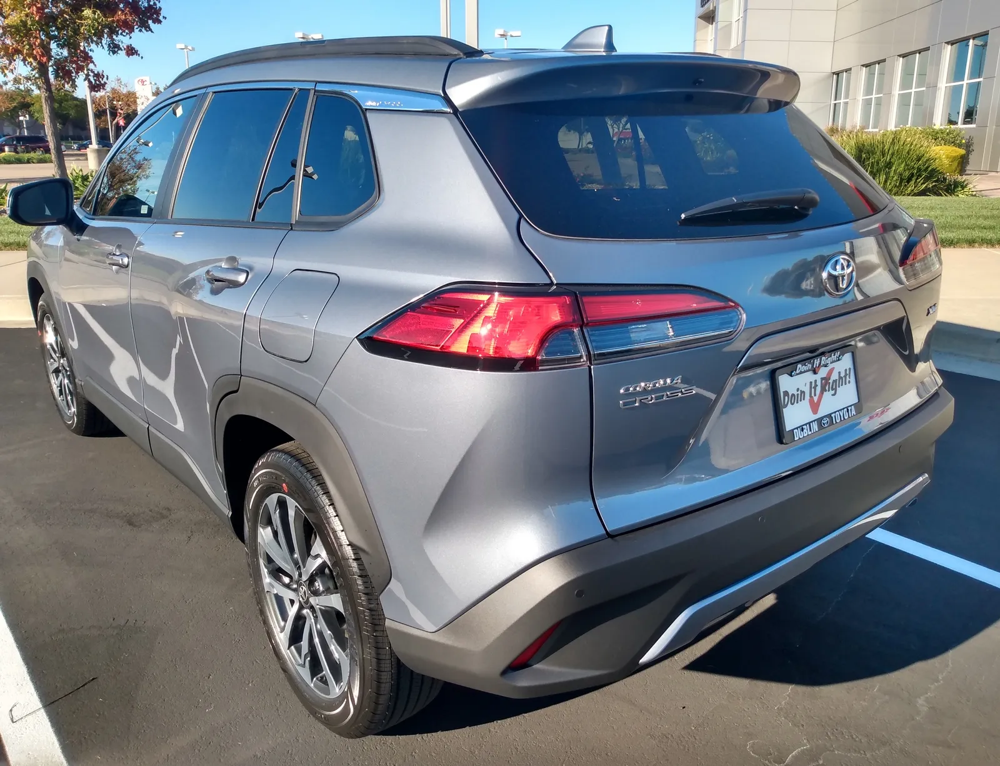
▲ 미국에서 촬영된 코롤라 크로스 가솔린 XLE의 후면(파일명 기준 2022년형). 2027년형 XLE와 세부가 다를 수 있다 ⓒ DestinationFearFan (Wikimedia Commons, CC BY-SA 4.0)
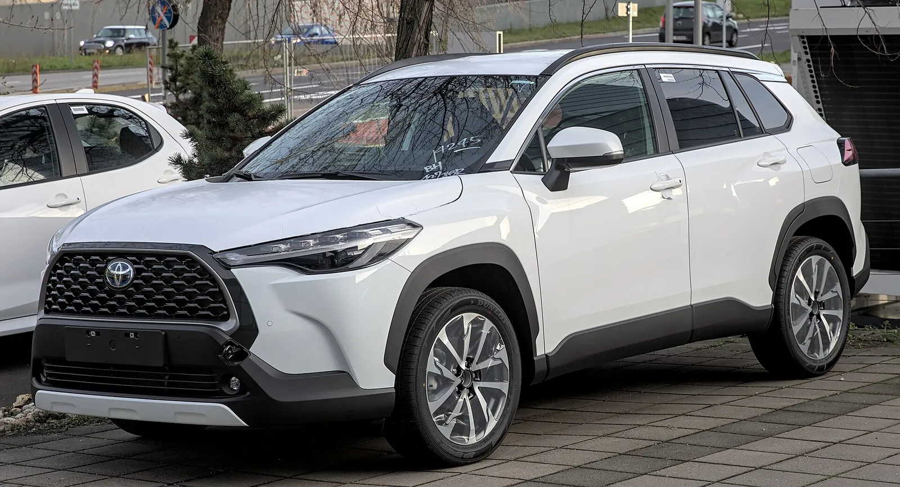
▲ 유럽 사양으로 보이는 코롤라 크로스 하이브리드(위키미디어 제목 기준). 미국형과 외관이 다를 수 있다 ⓒ Alexander Migl (Wikimedia Commons, CC BY-SA 4.0)
6. 하이브리드는 입문가 +2,020달러(토요타 가격표 기준)를 만회할까
가솔린 AWD(복합 30mpg)와 하이브리드(42mpg)의 연료비를 카프리즘이 단순 가정으로 계산했다. 연 15,000마일 주행, 휘발유 갤런당 3.20달러를 가정했다(실제 평균 유가가 아니라 계산용 가정이다).
| 구분 | 연료 소비 | 연간 연료비 | 차이 |
|---|---|---|---|
| 가솔린 AWD(30mpg) | 500갤런 | $1,600 | 기준 |
| 하이브리드(42mpg) | 약 357갤런 | 약 $1,143 | −약 $457/년 |
| LE AWD 대비 SE 가격 차이 $2,250 | 회수 기간 | 약 4.9년 | 2,250 ÷ 457 |
LE AWD와 SE의 장비가 같지 않으므로 이는 어디까지나 파워트레인 차이만 본 계산이다. 토요타 하이브리드 장기 보유 비용은 토요타 하이브리드 배터리 교체 비용 기사, 같은 브랜드 세단 경쟁은 기아 K4와 코롤라 미국 비교 기사를 참고할 수 있다. 셀토스의 하이브리드 계획은 셀토스 2세대 하이브리드 기사에 정리돼 있다.
5년 소유 비용 비교와 S 폐지 효과
가솔린 LE AWD와 하이브리드 SE를 같은 조건(목적지 포함 MSRP + 연료비)으로 맞췄다. 연료 소비 = 연 주행거리 ÷ 연비(가솔린 AWD 30mpg, 하이브리드 42mpg, 둘 다 토요타 제조사 추정치), 연료비 = 소비량 × 갤런당 3.20달러. 가솔린 연 1,600달러, 하이브리드 연 약 1,143달러이므로 연 절감액은 약 457달러다. 취득세·보험·정비·감가·금리는 포함하지 않은 단순 계산이다.
| 항목 | LE AWD(가솔린) | SE(하이브리드) | XLE AWD(가솔린) |
|---|---|---|---|
| MSRP + 목적지 1,595 | 30,760 | 33,010 | 33,505 |
| 3년 연료비 | 4,800 | 3,429 | 4,800 |
| 5년 연료비 | 8,000 | 5,714 | 8,000 |
| 3년 누적(구매가+연료) | 35,560 | 36,439 | 38,305 |
| 5년 누적(구매가+연료) | 38,760 | 38,724 | 41,505 |
| 7년 누적(구매가+연료) | 41,960 | 41,010 | 44,705 |
| SE − LE AWD | 3년 +879달러, 5년 −36달러(사실상 손익분기), 7년 −950달러 | ||
| SE − XLE AWD | 3년 −1,866달러, 5년 −2,781달러, 7년 −3,695달러(SE가 XLE AWD보다 싸게 시작해 연료비도 덜 든다) | ||
S 등급이 없어진 효과는 회수 기간 비교로 볼 수 있다. 2026년에는 하이브리드 S(29,395달러)와 가솔린 LE AWD(28,665달러)의 차이가 730달러(공식 2월 가격표)여서 약 1.6년(730 ÷ 457)에 회수됐다. 2027년에는 비교 대상이 SE(31,415달러)와 LE AWD(29,165달러), 차이 2,250달러로 벌어져 약 4.9년이 걸린다. 다만 S와 LE, SE와 LE는 장비 구성이 같지 않아 파워트레인 차이만 본 계산이다. 연 주행거리와 유가에 따라 회수 기간이 얼마나 흔들리는지는 아래 표와 같다.
| 연 주행거리 | 휘발유 2.80달러/갤런 | 3.20달러/갤런 | 3.80달러/갤런 |
|---|---|---|---|
| 10,000마일 | 8.4 / 2.7 | 7.4 / 2.4 | 6.2 / 2.0 |
| 15,000마일 | 5.6 / 1.8 | 4.9 / 1.6 | 4.1 / 1.3 |
| 20,000마일 | 4.2 / 1.4 | 3.7 / 1.2 | 3.1 / 1.0 |
계산식은 회수 연수 = 가격 차이 ÷ 연 절감액이며, 연 절감액 = 주행거리 × 유가 × (1/30 − 1/42)다. 같은 SE를 사더라도 연 1만 마일 주행자는 3.20달러 기준 7년 넘게 걸리고, 연 2만 마일 주행자는 4년 이내에 회수한다. 미국 신차 가격 전반의 흐름은 미국 신차 평균가·관세 기사, 신차 5년 보유 비용을 따지는 방법은 신차·중고 5년 보유비용 기사, 셀토스·코나와의 체급 비교는 트레일블레이저·셀토스·코나 비교 기사에 있다.
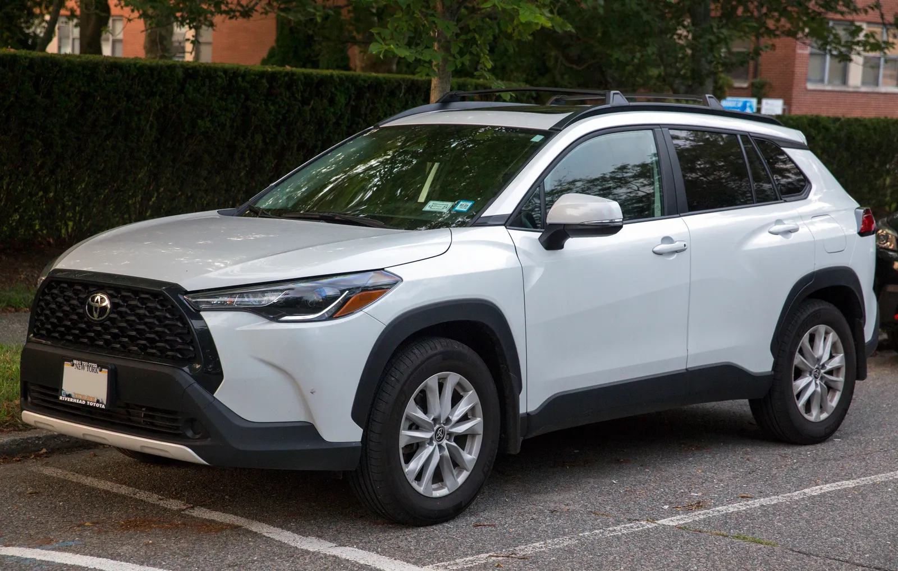
▲ 미국에서 촬영된 코롤라 크로스 가솔린 LE AWD(파일명 기준 2024년형). 2027년형과 외관이 같다고 확정하지 않는다 ⓒ Mr.choppers (Wikimedia Commons, CC BY-SA 3.0)
✅ 2027 코롤라 크로스 가격 읽을 때 체크할 점
· 인상폭의 기준 — 토요타 2월 가격표 대비 +500달러, 6월 집계 대비로는 +300달러로 보일 수 있다. 비교하려는 2026 가격이 어느 시점인지 확인할 것
· 목적지 요금 — 토요타 가격표에 1,595달러로 명시됐다. 광고 가격에는 보통 빠져 있다
· 하이브리드 S 폐지 — '가장 싼 하이브리드'가 사라져 입문가가 사실상 2,020달러 올랐고, 가솔린 LE AWD 대비 회수 기간이 1.6년에서 4.9년으로 늘었다
· 연식 변경 내용 — 토요타 자료상 추가 사양은 없다
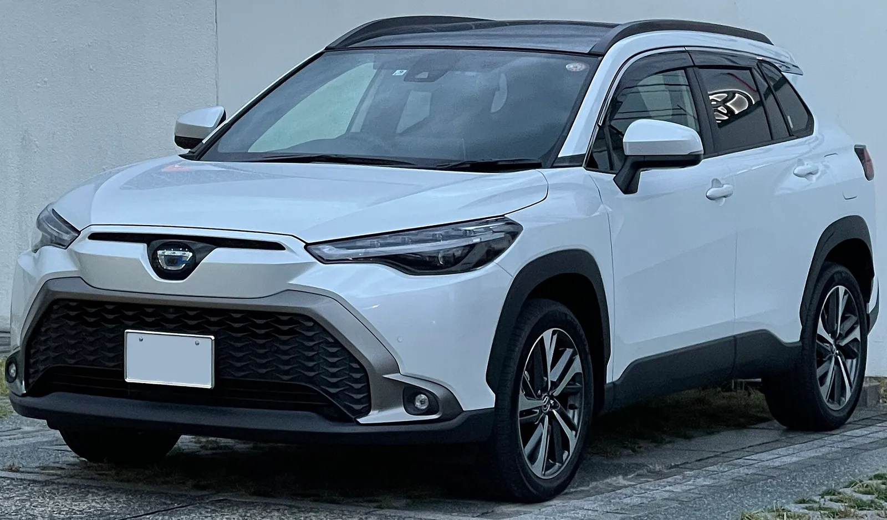
▲ 일본 사양 코롤라 크로스 하이브리드 Z(2WD). 일본 시장 차량이라 미국형과 다르다 ⓒ Tokumeigakarinoaoshima (Wikimedia Commons, CC0)
7. 한국에서는 — 국내 판매 여부부터 확인이 필요하다
한국 토요타(토요타코리아)가 코롤라 크로스를 국내에서 판매하는지는 이번 조사에서 확인하지 못했다. 한국어 검색으로는 관련 공식 자료가 나오지 않았고, 국내 가격·트림도 확인하지 못했다. 그래서 이 가격 인상이 국내 가격으로 이어진다고 보기는 어렵다. 다만 미국 시장에서 같은 체급인 셀토스·코나는 한국 업체 모델이어서 비교 의미가 있다. 코나의 풀체인지 소식은 코나 풀체인지 기사에서 정리했다.
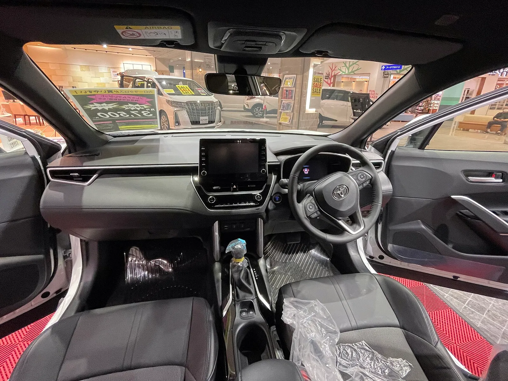
▲ 일본 사양 코롤라 크로스 하이브리드 Z의 실내(우핸들). 미국형 인테리어와 같다고 확정하지 않는다 ⓒ Tokumeigakarinoaoshima (Wikimedia Commons, CC0)
토요타 공식 가격·사양은 토요타 USA 뉴스룸에서 확인할 수 있다. 토요타 USA 뉴스룸 바로가기 등급별 MSRP와 목적지 요금이 담긴 가격표 PDF도 공개돼 있다. 2026·2027 토요타 가격표 PDF 바로가기
| 항목 | 상태 |
|---|---|
| 2027 등급별 MSRP | 토요타 공식 가격표 PDF(2026.10.2)로 전 등급 확인(카버즈 XSE 수치는 20달러 오류) |
| 2027 목적지 요금 1,595달러 | 토요타 가격표 PDF로 확인(2026년 2월 가격표는 1,450달러) |
| 2026 비교 기준 가격 | 토요타 2026.2.26 가격표로 확정. 6월 집계(TFL)의 +200달러가 중간 인상인지는 미확인 |
| 경쟁 차종 MSRP | 셀토스(기아 미디어)·HR-V(혼다 뉴스룸)는 공식 확인, 코나는 집계 기준(미확인) |
| 한국 판매 여부 | 확인하지 못함 |
| 시트 폴드 화물공간 | 가솔린 최대 46.9입방피트(뉴스룸 페이지), 하이브리드는 미확인 |
| 딜러 출시일 | 2026년 가을로만 안내 |
8. 요약
2027 코롤라 크로스는 가솔린 L 25,535달러, 하이브리드 SE 31,415달러부터 시작하며, 토요타 공식 가격표 기준으로 가솔린은 전 등급 +500달러, 하이브리드는 SE·XSE 각 +700달러 올랐다. 목적지 요금도 1,450달러에서 1,595달러로 올랐다.
하이브리드 S 등급이 사라져 입문가가 29,395달러에서 31,415달러(+2,020달러, +6.9%)로 높아졌다. 가솔린 LE AWD 대비 하이브리드 SE의 연료비 회수 기간은 약 4.9년(S가 있던 2026년에는 약 1.6년)이다. 6월 집계의 +200달러가 중간 인상인지는 확인하지 못했다.
입문 가솔린(목적지 포함)은 셀토스 LX보다 645달러 비싸고 2027 HR-V LX보다 1,020달러 싸다. 코나 가격은 공식 확인을 못 했고, 한국 판매 여부도 확인하지 못했다.